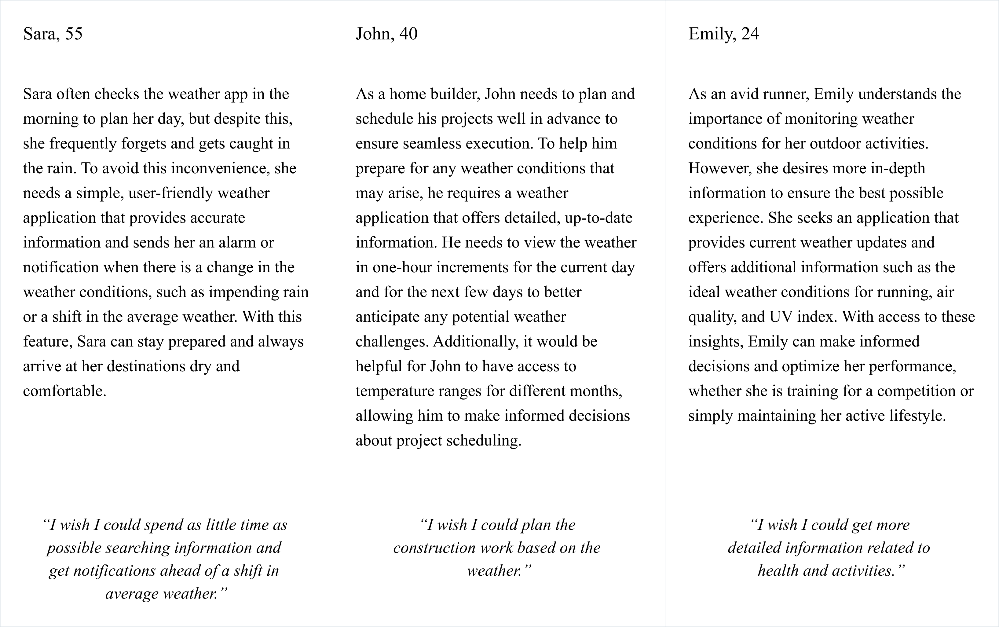
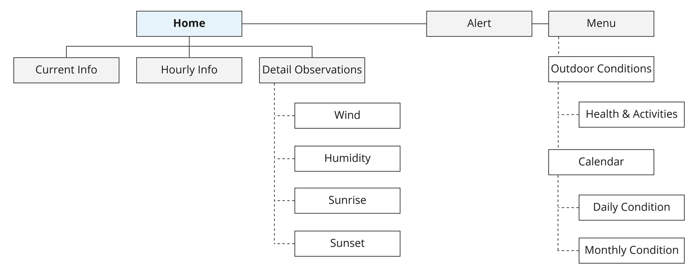
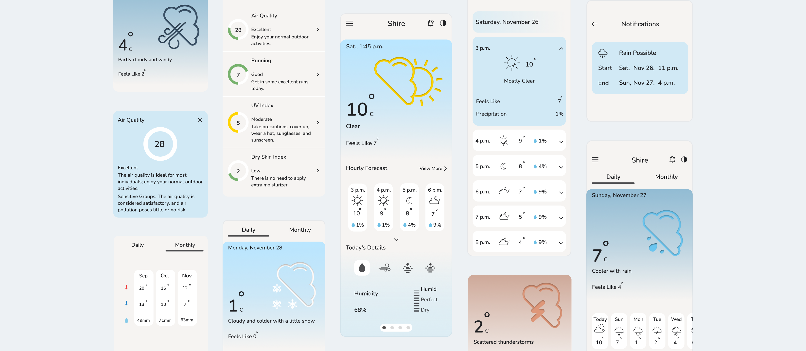

Weder
Project Overview
This weather forecast interface is optimized for mobile devices, providing real-time weather updates and alerts.
Users can easily access a variety of weather information including detailed hourly forecasts, current and upcoming conditions, and important metrics like humidity, allergy levels, and air quality index.
My idea was to create a minimalistic yet intuitive and user-friendly app that caters to a wide range of needs and enhances the user experience.
Role Research, UX, UI
Time4 weeks
Design Process
Research
I initiated the project by conducting comprehensive primary and secondary research to uncover the essential features of a weather forecast app. To ensure that the app meets the needs and requirements of users, I employed the personas technique to gain a deeper understanding of the user's needs, preferences, and behaviors. This allowed me to tailor the design and development of the app to better suit the users' needs.
Personas

Sitemap
After carefully identifying the most vital features for the app through my research, I created a detailed sitemap that outlines the navigation and structure of the app. This helped me to visualize the flow of the app and ensure that it was easy for users to navigate.
The sitemap is presented below for your reference.

Wireframes
Armed with the insights gathered during the research and design process, I began to make strategic decisions on how to organize the content within the Weder app, aligning with the project goals and user needs.
I began the design process with low-fidelity wireframes, and then progressed to creating high-fidelity designs.
VIEW PROTOTYPE 